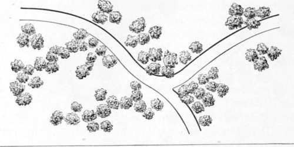

On Wood And Plantations. Part 4
Description
This section is from the book "Landscape Gardening", by Andrew Jackson Downing. Also available from Amazon: Landscape Gardening.
On Wood And Plantations. Part 4
It is proper that we should here remark, that a distinct species of after treatment is required for the two modes. Trees, or groups, where the Beautiful is aimed at, should be pruned with great care, and indeed scarcely at all, except to remedy disease, or to correct a bad form. Above all, the full luxuriance and development of the tree should be encouraged by good soil, and repeated manurings when necessary; and that most expressively elegant fall and droop of the branches, which so completely denotes the Beautiful in trees, should never be warred against by any trimming of the lower branches, which must also be carefully preserved against cattle, whose browsing line would soon efface this most beautiful disposition in some of our line lawn trees. Clean, smooth stems, fresh and tender bark, and a softly rounded pyramidal or drooping head, are the characteristics of a Beautiful free. We need not add that gently sloping ground, or surfaces rolling in easy undulations, should accompany such plantations.
* The original figure is here reproduced, from which it may be remarked that the grouping is both too scattered and too crowded to meet the modern taste. The best practitioners of the present day would make closer masses contrasting with wider open spaces. — F. A. W.
Fig. 10. Trees Grouped to Produce the Picturesque.
Planting and Grouping to produce the Picturesque. All trees are admissible in a picturesque place, but a predominance must be used by the planter of what are truly called picturesque trees, of which the larch and fir tribe and some species of oak, may be taken as examples. In Picturesque plantations everything depends on intricacy and irregularity, and grouping, therefore, must often be done in the most irregular manner — rarely, if ever, with single specimens, as every object should seem to connect itself with something else; but most frequently there should be irregular groups, occasionally running into thickets, and always more or less touching each other; trusting to after time for any thinning, should it be necessary. Fig. 10 may, as compared with Fig. 9, give an idea of picturesque grouping.
There should be more of the wildness of the finest and most forcible portions of natural woods or forests, in the disposition of the trees; sometimes planting them closely, even two or three in the same hole, at others more loose and scattered. These will grow up into wilder and more striking forms, the barks will be deeply furrowed and rough, the limbs twisted and irregular, and the forms and outlines distinctly varied. They should often be intermixed with smaller undergrowth of a similar character, as the hazel, hawthorn, etc., and formed into such picturesque and striking groups, as painters love to study and introduce into their pictures. Sturdy and bright vines, or such as are themselves picturesque in their festoons and hangings, should be allowed to clamber over occasional trees in a negligent manner; and the surface and grass, in parts of the scene not immediately in the neighborhood of the mansion, may be kept short by the cropping of animals, or allowed to grow in a more careless and loose state, like that of tangled dells and natural woods.
There will be the same open glades in picturesque as in beautiful plantations; but these openings, in the former, will be bounded by groups and thickets of every form, and of different degrees of intricacy, while in the latter the eye will repose on softly rounded masses of foliage, or single open groups of trees, with finely balanced and graceful heads and branches.
In order to know how a plantation in the Picturesque mode should be treated, after it is established, we should reflect a moment on what constitutes picturesqueness in any tree. This will be found to consist either in a certain natural roughness of bark, or wildness of form and outline, or in some accidental curve of a branch of striking manner of growth, or perhaps of both these conjoined. A broken or crooked limb, a leaning trunk, or several stems springing from the same base, are frequently peculiarities that at once stamp a tree as picturesque. Hence, it is easy to see that the excessive care of the cultivator of trees in the graceful school to obtain the smoothest trunks, and the most sweeping, perfect, and luxuriant heads of foliage, is quite the opposite of what is the picturesque arboriculturist's ambition. He desires to encourage a certain wildness of growth, and allows his trees to spring up occasionally in thickets to assist this effect; he delights in occasional irregularity of stem and outline, and he therefore suffers his trees here and there to crowd each other; he admires a twisted limb or a moss covered branch, and in pruning he therefore is careful to leave precisely what it would be the aim of the other to remove; and his pruning, where it is at all necessary, is directed rather towards increasing the naturally striking and peculiar habit of the picturesque tree, than assisting it in developing a form of unusual refinement and symmetry. From these remarks we think the amateur will easily divine that planting, grouping, and culture to produce the Beautiful, require a much less artistic eye (though much more care and attention) than performing the same operations to elicit the Picturesque. The charm of a refined and polished landscape garden, as we usually see it in the Beautiful grounds with all the richness and beauty developed by high culture, arises from our admiration of the highest perfection, the greatest beauty of form, to which every object can be brought; and, in trees, a judicious selection, with high cultivation, will always produce this effect.
Continue to: